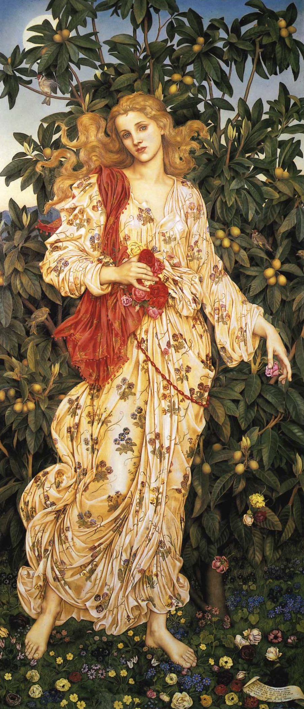

作品名 「フローラ」
花言葉 「謙虚」「誠実」
スミレ
「謙虚」
花名のスミレは、花の形状が墨入れ（墨壺）に似ていることに由来するともいわれます。花言葉の「謙虚」「誠実」は、道ばたや草かげにひっそりと花を咲かせる、そのひかえめで奥ゆかしい花姿に由来します。スミレの花は神話によく登場し、多くの花々のなかで特別に扱われています。西洋では、スミレの花言葉である「謙虚」「誠実」を兼ね備えたひとが理想の女性といわれます。
フローラ
イーヴリン・ド・
モーガン
花の女神フローラを描いた作品。フローラはスミレの花の模様の衣をまとい、バラの花を手にしている。背後の果実の実った樹木や小さな花が咲き乱れた地面は「春の寓意」を手本としている。モーガンは、神秘的で象徴主義的な作品で知られるイギリスのラファエル前派の画家で、しばしば精神的、神話的なテーマを描いている。モーガンの作品は、その豊かな色彩と細密な表現で知られ、今日でも美術品コレクターや愛好家の間で高く評価されている。
| 作品名 | フローラ |
| 作者 | イーヴリン・ド・モーガン |
| 制作年 | 1884年 |
| 種類 | キャンバス・油彩 |
| 寸法 | 198cm × 86cm |
| 所蔵 | ド・モーガン財団 |